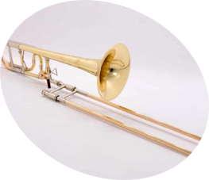

오케스트라 악기 구성은 기본적으로 현악기, 목관악기, 금관악기, 타악기로 이루어져 있으며, 상황에 따라 악기가 추가되거나 빠질 수도 있습니다.
특히 오케스트라의 규모와 편성은 작품의 요구에 따라 다양하게 구성되며, 목관악기와 금관악기의 편성에 따라 2관, 3관, 4관 편성 등으로 나뉩니다.
현악기 (String)
Violin
Vn
바이올린은 가장 작은 크기와 높은 음역을 가진 악기로, 맑고 날카로운 소리를 냅니다.
오케스트라에서 주로 멜로디를 연주하며, 섬세한 표현이 가능합니다.
Viola
Va, Vla
비올라는 바이올린보다 크며, 부드럽고 중후한 음색으로 중간 음역대를 채웁니다.
오케스트라의 조화를 담당하며, 서정적인 멜로디를 연주합니다.
Cello
Vc, Vlc
첼로는 넓은 음역대와 인간의 목소리와 유사한 음색을 가진 악기입니다.
저음과 멜로디 역할을 모두 수행하며, 깊고 감정적인 소리를 냅니다.
Double Bass
Db, Cb
더블베이스는 현악기 중 가장 크고 낮은 음역대를 담당하며, 풍부한 소리를 냅니다.
오케스트라의 저음 기반을 형성하며, 리듬과 화음을 보강합니다.
목관악기 (Woodwind)
Flute
Fl
플룻은 맑고 부드러운 소리를 내며, 밝고 경쾌한 음색이 특징입니다.
서정적인 멜로디와 화려한 장식음을 통해 생동감을 더합니다.
Oboe
Ob
오보에는 독특한 음색을 가진 더블 리드 악기로 우아한 분위기를 만듭니다.
오케스트라 조율에 사용되며, 시작 선율을 자주 연주합니다.
Clarinet
Cl, Cla
클라리넷은 넓은 음역과 다양한 음색을 가진 악기로, 부드럽고 따뜻한 소리를 냅니다.
클래식뿐 아니라 재즈 등 다양한 장르에서 활발히 사용됩니다.
Bassoon
Bn, Bsn, Fg
바순은 낮고 중후한 음색을 내며, 저음역대를 담당하는 더블 리드 악기입니다.
독특한 음향으로 음악의 깊이를 더하며, 멜로디 역할도 수행합니다.
금관악기 (Brass)
Trumpet
Tp, Trp
트럼펫은 밝고 강렬한 소리로, 금관악기 중 가장 높은 음역대를 담당합니다.
영웅적이고 웅장한 분위기를 연출하며, 빠르고 화려한 연주가 가능합니다.

Trombone
Tb, Trb
트럼본은 슬라이드로 음정을 조절하며, 웅장하고 중후한 소리를 냅니다.
강렬한 악센트와 부드러운 음색을 모두 표현할 수 있습니다.
Horn
Hn, Hr, Hrn
호른은 부드럽고 풍부한 음색으로, 조화로운 사운드를 만들어냅니다.
우아하고 자연스러운 소리를 통해 음악에 깊이를 더합니다.
Tuba
Ta, Tuba
튜바는 금관악기 중 가장 낮은 음역대를 담당하며, 깊고 묵직한 소리를 냅니다.
오케스트라의 기반을 형성하며, 리듬과 화음을 보강합니다.
타악기 (Percussion)
Timpani
Tim
팀파니는 조율 가능한 타악기로, 북소리를 통해 웅장한 분위기를 연출합니다.
오케스트라의 긴장감과 클라이맥스를 강조하는 데 사용됩니다.
Cymbals
Cy
심벌즈는 두 개의 금속판을 부딪혀 강렬하고 선명한 소리를 냅니다.
강렬한 충격음을 통해 음악의 절정을 강조합니다.